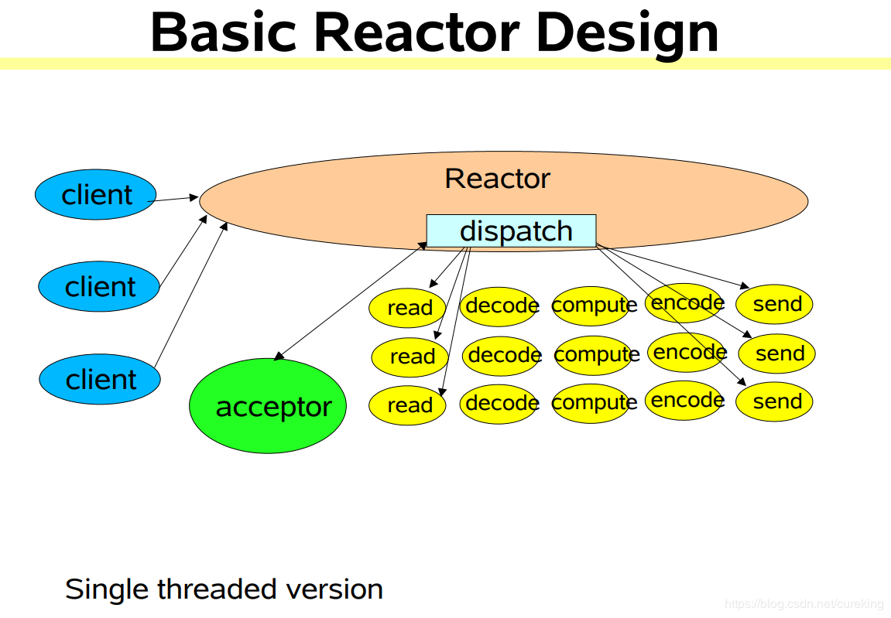
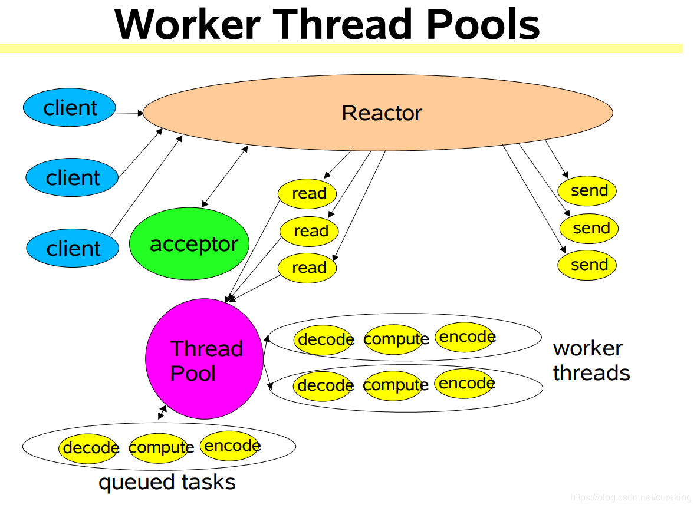
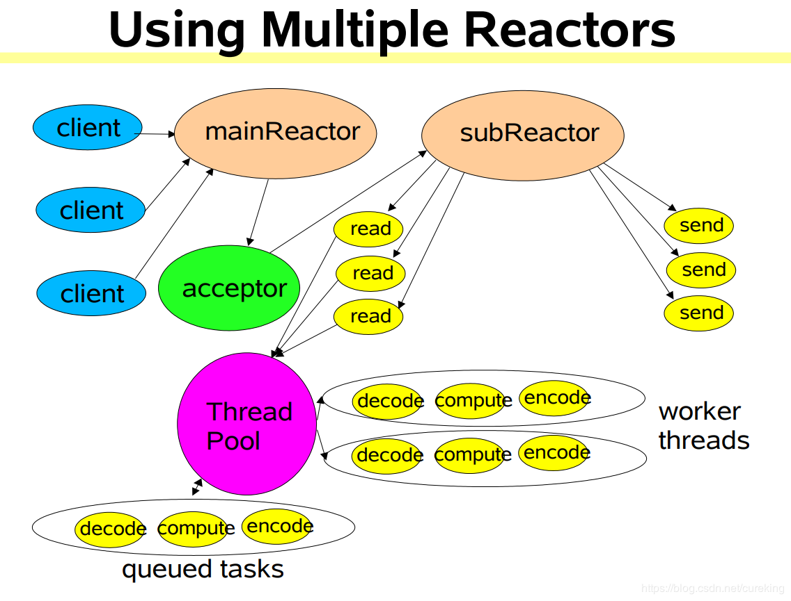
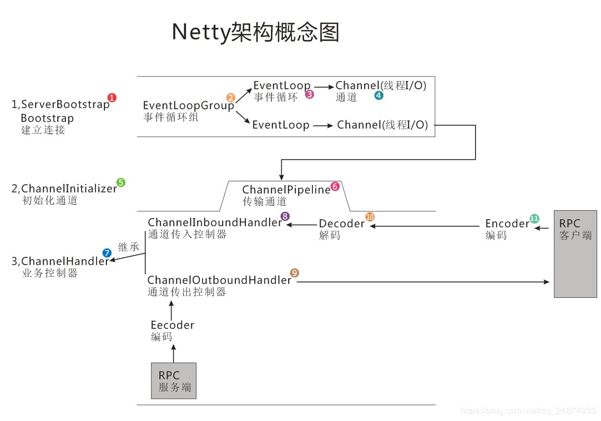

原文连接:https://www.cnblogs.com/Tiancheng-Duan/p/11834590.html
从BIO到Netty的演变
前言
计算机网络可以说是每个学计算机的都绕不过去的一道坎。计算机网络到底有多么重要，你走到大学图书馆的计算机部分，翻开那些什么《从零开始：黑客XXX》，《黑客攻防从入门到放弃》等书籍，基本第一部分都是在谈论网络。你去一些X客论坛，上面的教程帖也基本都是从网络部分开始的。
相信每一位科班出身的，都学习过《计算机网络》这样书籍， 上过这样的课程。当然教师资源如何，我这里就不谈论，那一定又会引出一顿苦水。但是学习完这样的课程，我们还是对计算机网络感到十分迷茫。这时候的我们可以背下网络七层模型，网络五层模型等，了解局域网，IP等基本地概念，但是计算机网络对于我们来说，还是一个十分空荡荡的名词。
为了更好地了解网络（绝对不是因为那时候很迷黑客的缘故），我决定参加高级网络工程师的考试。通过网络工程师的我对计算机网络有了更为深入的理解，开始将自己的计算机网络体系从概念上勾连起来。也许我可以看懂其中的一些路由规则，甚至看懂一些路由分发的论文。但是我依旧只是站在理论的角度，去理解计算机网络。
到了工作的时候，开始了解Socket编程，开始参与各种实际生产环境的编程。这个时候的我开始对网络有了虽然简单，但是十分真实的接触。计算机网络不再只是停留在书本中的概念，而是我用以实现业务目标的切实手段。
随着工作中开始负责物联网项目的建设，我对网络中的各种协议开始有了自己的认识，甚至可以自己实现网络协议规范的代码落地。于此同时，由于对网络交互的性能要求，我不再只是会使用BIO网络编程，我开始使用NIO网络编程。
为了自己的知识储备，也是为了满足自己的好奇心，我查找了许多的资料，也报了许多课程，去学习网络编程。而我正好周六完成了软考的又一次考试，所以接下来有一定空闲时间的我，接下来会继续整理我的知识，并将它写成博客。
这篇博客的主要内容就是按照演变的顺序，写下BIO->NIO->Reactor->Netty这样的四个里程碑。这也是大佬们推荐的计算机网络编程的学习路线。不过这次只是给个整体的认识以及demo，更为深入的原理探究，会放在后面。
BIO
介绍
几乎每个人都是BIO开始的计算机网络编程，而其中大部分也永远地留在了这个计算机网络编程的模型。
优点
- 理解简单
- 实现简单
- 要求较低
缺点
- 性能低
- 瓶颈低
- 扩展难
代码示例（BIO下TCP）
这里给出一些简单的demo，供大家认识。
BIO_Client
package tech.jarry.learning.netease;
import java.io.IOException;
import java.io.OutputStream;
import java.net.Inet4Address;
import java.net.InetSocketAddress;
import java.net.Socket;
import java.nio.charset.Charset;
import java.util.Scanner;
/**
* @Description：
* @Author: jarry
*/
public class BIOClient {
private static final Charset charset = Charset.forName("utf-8");
public static void main(String[] args) throws IOException {
Socket socket = new Socket();
// Socket socket = new Socket("localhost", 8080);
// 我还以为可以的。但是貌似上面的8080表示目标端口，而下面的8080表示源端口（发送端口）
// socket.bind(new InetSocketAddress("localhost", 8080));
// 后来才去确定，.bind是用于绑定源信息，而.connect是用于绑定目标信息
socket.connect(new InetSocketAddress(Inet4Address.getLocalHost(), 8080));
OutputStream outputStream = socket.getOutputStream();
Scanner scanner = new Scanner(System.in);
System.out.println("please input: ");
String msg = scanner.nextLine();
outputStream.write(msg.getBytes(charset));
scanner.close();
outputStream.close();
socket.close();
}
}
BIO_ServerV1
package tech.jarry.learning.netease;
import java.io.BufferedReader;
import java.io.IOException;
import java.io.InputStream;
import java.io.InputStreamReader;
import java.net.InetSocketAddress;
import java.net.ServerSocket;
import java.net.Socket;
/**
* @Description： BIO模型中Server端的简单实现
* @Author: jarry
*/
public class BIOServer {
public static void main(String[] args) throws IOException {
ServerSocket serverSocket = new ServerSocket();
serverSocket.bind(new InetSocketAddress(8080));
System.out.println("server has started");
while (!serverSocket.isClosed()) {
Socket requestClient = serverSocket.accept();
System.out.println("server get a connection: " + requestClient.toString());
InputStream requestInputStream = requestClient.getInputStream();
BufferedReader reader = new BufferedReader(new InputStreamReader(requestInputStream));
String msg;
while ((msg = reader.readLine()) != null) {
if (msg.length() == 0) {
break;
}
System.out.println(msg);
}
System.out.println("server has receive a message from: " + requestClient.toString());
requestInputStream.close();
requestClient.close();
}
serverSocket.close();
}
}
BIO_ServerV2
package tech.jarry.learning.netease;
import java.io.BufferedReader;
import java.io.IOException;
import java.io.InputStream;
import java.io.InputStreamReader;
import java.net.InetSocketAddress;
import java.net.ServerSocket;
import java.net.Socket;
import java.util.concurrent.ExecutorService;
import java.util.concurrent.Executors;
/**
* @Description： 直接对原有代码BIOServer进行暴力修改，将其阻塞部分，通过多线程实现异步处理
* @Author: jarry
*/
public class BIOServer1 {
private static ExecutorService executorService = Executors.newCachedThreadPool();
public static void main(String[] args) throws IOException {
ServerSocket serverSocket = new ServerSocket();
serverSocket.bind(new InetSocketAddress(8080));
System.out.println("server has started");
while (!serverSocket.isClosed()) {
Socket requestClient = serverSocket.accept();
System.out.println("server get a connection: " + requestClient.toString());
executorService.submit(new Runnable() {
@Override
public void run() {
InputStream requestInputStream = null;
try {
requestInputStream = requestClient.getInputStream();
} catch (IOException e) {
e.printStackTrace();
}
BufferedReader reader = new BufferedReader(new InputStreamReader(requestInputStream));
String msg = null;
while (true) {
try {
if (!((msg = reader.readLine()) != null)) {
break;
}
} catch (IOException e) {
e.printStackTrace();
}
if (msg.length() == 0) {
break;
}
System.out.println(msg);
}
System.out.println("server has receive a message from: " + requestClient.toString());
try {
requestInputStream.close();
requestClient.close();
} catch (IOException e) {
e.printStackTrace();
}
}
});
}
serverSocket.close();
}
/**
* 运行结果分析：
* server has started
* server get a connection: Socket[addr=/10.0.75.1,port=64042,localport=8080]
* server get a connection: Socket[addr=/10.0.75.1,port=64052,localport=8080]
* server get a connection: Socket[addr=/10.0.75.1,port=64061,localport=8080]
* 123
* server has receive a message from: Socket[addr=/10.0.75.1,port=64042,localport=8080]
* 456
* server has receive a message from: Socket[addr=/10.0.75.1,port=64052,localport=8080]
* 789
* server has receive a message from: Socket[addr=/10.0.75.1,port=64061,localport=8080]
*/
}
BIO_ServerV3
package tech.jarry.learning.netease;
import java.io.*;
import java.net.InetSocketAddress;
import java.net.ServerSocket;
import java.net.Socket;
/**
* @Description： 直接对原有代码BIOServer进行暴力修改，增加了其http格式的返回，确保浏览器可以正常访问
* @Author: jarry
*/
public class BIOServer2 {
public static void main(String[] args) throws IOException {
ServerSocket serverSocket = new ServerSocket();
serverSocket.bind(new InetSocketAddress(8080));
System.out.println("server has started");
while (!serverSocket.isClosed()) {
Socket requestClient = serverSocket.accept();
System.out.println("server get a connection: " + requestClient.toString());
InputStream requestInputStream = requestClient.getInputStream();
BufferedReader reader = new BufferedReader(new InputStreamReader(requestInputStream));
String msg;
while ((msg = reader.readLine()) != null) {
if (msg.length() == 0) {
break;
}
System.out.println(msg);
}
System.out.println("server has receive a message from: " + requestClient.toString());
// 返回数据，并确保可以被http协议理解
OutputStream outputStream = requestClient.getOutputStream();
outputStream.write("HTTP/1.1 200 OK\r\r".getBytes("utf-8"));
outputStream.write("Content-Length: 11\r\n\r\n".getBytes("utf-8"));
outputStream.write("Hello World".getBytes("utf-8"));
outputStream.flush();
requestInputStream.close();
outputStream.close();
requestClient.close();
}
serverSocket.close();
}
/**
* 运行结果分析：
*/
// server has started
// server get a connection: Socket[addr=/0:0:0:0:0:0:0:1,port=63008,localport=8080]
// GET / HTTP/1.1
// Host: localhost:8080
// Connection: keep-alive
// Cache-Control: max-age=0
// Upgrade-Insecure-Requests: 1
// User-Agent: Mozilla/5.0 (Windows NT 10.0; Win64; x64) AppleWebKit/537.36 (KHTML, like Gecko) Chrome/77.0.3865.90 Safari/537.36
// Sec-Fetch-Mode: navigate
// Sec-Fetch-User: ?1
// Accept: text/html,application/xhtml+xml,application/xml;q=0.9,image/webp,image/apng,*/*;q=0.8,application/signed-exchange;v=b3
// Sec-Fetch-Site: none
// Accept-Encoding: gzip, deflate, br
// Accept-Language: en-US,en;q=0.9,zh-CN;q=0.8,zh;q=0.7
// Cookie: Webstorm-c7a2b5a2=b5e53f87-54cc-41d5-a21f-c7be3056dfe8; centcontrol_login_token=09E8A6B6888CB0B7A9F89AB3DB5FAFE4
// server has receive a message from: Socket[addr=/0:0:0:0:0:0:0:1,port=63008,localport=8080]
// server get a connection: Socket[addr=/0:0:0:0:0:0:0:1,port=63009,localport=8080]
// GET /favicon.ico HTTP/1.1
// Host: localhost:8080
// Connection: keep-alive
// Pragma: no-cache
// Cache-Control: no-cache
// Sec-Fetch-Mode: no-cors
// User-Agent: Mozilla/5.0 (Windows NT 10.0; Win64; x64) AppleWebKit/537.36 (KHTML, like Gecko) Chrome/77.0.3865.90 Safari/537.36
// Accept: image/webp,image/apng,image/*,*/*;q=0.8
// Sec-Fetch-Site: same-origin
// Referer: http://localhost:8080/
// Accept-Encoding: gzip, deflate, br
// Accept-Language: en-US,en;q=0.9,zh-CN;q=0.8,zh;q=0.7
// Cookie: Webstorm-c7a2b5a2=b5e53f87-54cc-41d5-a21f-c7be3056dfe8; centcontrol_login_token=09E8A6B6888CB0B7A9F89AB3DB5FAFE4
// server has receive a message from: Socket[addr=/0:0:0:0:0:0:0:1,port=63009,localport=8080]
}
上面的代码是一套的，可以进行Server与Client的通信，功能较为简单。
所以这里再給一个，可以进行通信的版本。简单的业务场景可以直接修改，应用。
BIO2_Client
package self;
import java.io.*;
import java.net.*;
/**
* @Description：
* @Author: jarry
*/
public class Client {
public static void main(String[] args) throws IOException {
Socket socket = new Socket();
socket.setSoTimeout(2000);
socket.connect(new InetSocketAddress(Inet4Address.getLocalHost(),2000),2000);
System.out.println("client startup");
dealMsg(socket);
socket.close();
}
private static void dealMsg(Socket clientSocket) throws IOException {
// 1.获取键盘输入流
InputStream systemInputStream = System.in;
// 2.将systemInputStream转化为具有缓存功能的字符输入流BufferedReader
BufferedReader systemBufferedReader = new BufferedReader(new InputStreamReader(systemInputStream));
// 3.获取Socket输入流
InputStream socketInputStream = clientSocket.getInputStream();
// 4.将socketInputStream转换为具有缓存能力的字符输入流
BufferedReader socketBufferedReader = new BufferedReader(new InputStreamReader(socketInputStream));
// 5.获取Socket输出流
OutputStream socketOutputStream = clientSocket.getOutputStream();
// 6.将socketOutputStream转换为打印流（用于发送String)
PrintStream socketPrintStream = new PrintStream(socketOutputStream);
// 用于确立连接状态的标识符
boolean flag = true;
// 7.利用循环，client与server进行交互
do {
// 从键盘等系统输入流获取输入字符串
String str = systemBufferedReader.readLine();
// 将str写入到socketClient的打印流（本质是输出流）。socketClient的输出流是连接Server的，用于向Server发送数据的
socketPrintStream.println(str);
// 从Server获得回写（Server的回写，一定会发送到socketClient的输入流中（输入的“入”是指入socketClient）
String echo = socketBufferedReader.readLine();
// 建立一个用于关闭的方式
if ("bye".equalsIgnoreCase(echo)){
flag = false;
}else{
// 在控制台打印server的echo
System.out.println("server echo:"+echo);
}
}while (flag);
// 8.退出交互，需要关闭与Server连接的两个资源（输入与输出） 考虑一下lombok的@Cleanup
socketBufferedReader.close();
socketPrintStream.close();
}
}
BIO2_Server
package self;
import java.io.*;
import java.net.ServerSocket;
import java.net.Socket;
/**
* @Description：
* @Author: jarry
*/
public class Server {
public static void main(String[] args) throws IOException {
// 建立Server的Socket，服务端不需要设置IP，以及Port
// IP采用本地IP
ServerSocket serverSocket = new ServerSocket(2000);
System.out.println("server startup");
// 通过循环，对client的请求进行监听
while (true){
// 获得client的请求
Socket clientRequest = serverSocket.accept();
// 异步处理client的请求
ClientHandler clientHandler = new ClientHandler(clientRequest);
clientHandler.start();
}
}
private static class ClientHandler extends Thread {
Socket socketClient = null;
boolean flag = true;
ClientHandler(Socket socketClient){
this.socketClient = socketClient;
}
@Override
public void run() {
super.run();
// 构建系统输入流
InputStream systemInputStream = System.in;
// 将系统输入流转换为字符输入流
BufferedReader systemBufferedReader = new BufferedReader(new InputStreamReader(systemInputStream));
try {
// 构建socketClient的输入流（即客户端中，写入client输出流的数据）
InputStream clientInputStream = socketClient.getInputStream();
// 将client的输入流转为具有存储能力的BufferedReader
BufferedReader clientBufferedReader = new BufferedReader(new InputStreamReader(clientInputStream));
// 构建socketClient的输出流（用于发送数据，即客户端中，从client输入流读取的数据）
OutputStream clientOutputStream = socketClient.getOutputStream();
// 将client的输出流转换为打印流，便于输出数据
PrintStream clientPrintStream = new PrintStream(clientOutputStream);
// 通过循环，与客户端进行交互
do {
// 读取从客户端发送来的数据，即读取socketClient的输入流转化的BufferedReader
String str = clientBufferedReader.readLine();
if ("bye".equalsIgnoreCase(str)){
flag = false;
clientPrintStream.println("connect interrupt");
}else{
System.out.println(str);
// 发送回写数据，即将回写数据写入socketClient的输出流（客户端的输入流会获取相关数据）
clientPrintStream.println(str.length());
}
// 从系统输入中获取想要发送的数据
String servStr = systemBufferedReader.readLine();
// 发送到客户端
clientPrintStream.println(servStr);
}while (flag);
// 同样的，关闭连接资源
clientBufferedReader.close();
clientPrintStream.close();
} catch (IOException e) {
e.printStackTrace();
}finally {
// 无论发生什么，最后都要关闭socket连接
try {
socketClient.close();
} catch (IOException e) {
e.printStackTrace();
}
}
}
}
}
为了使得代码结构更有优雅，并且为了更好地处理字符编码问题（demo中保留了各种数据类型的处理方式）。我们将上述版本更新一下。
BIO2_ClientV2
package example;
import java.io.IOException;
import java.io.InputStream;
import java.io.OutputStream;
import java.net.Inet4Address;
import java.net.InetSocketAddress;
import java.net.Socket;
import java.net.SocketException;
import java.nio.ByteBuffer;
public class Client {
// 连接到远程服务器的远程端口
private static final int PORT = 20000;
// 本地端口
private static final int LOCAL_PORT = 20001;
public static void main(String[] args) throws IOException {
// 创建Socket的操作，可以选择不同的创建方式
Socket socket = createSocket();
// Socket初始化操作
initSocket(socket);
// 链接到本地20000端口，超时时间3秒，超过则抛出超时异常
socket.connect(new InetSocketAddress(Inet4Address.getLocalHost(), PORT), 3000);
System.out.println("已发起服务器连接，并进入后续流程～");
System.out.println("客户端信息：" + socket.getLocalAddress() + " P:" + socket.getLocalPort());
System.out.println("服务器信息：" + socket.getInetAddress() + " P:" + socket.getPort());
try {
// 发送接收数据
todo(socket);
} catch (Exception e) {
System.out.println("异常关闭");
}
// 释放资源
socket.close();
System.out.println("客户端已退出～");
}
/**
* 创建Socket
* @return
* @throws IOException
*/
private static Socket createSocket() throws IOException {
/*
// 无代理模式，等效于空构造函数
Socket socket = new Socket(Proxy.NO_PROXY);
// 新建一份具有HTTP代理的套接字，传输数据将通过www.baidu.com:8080端口转发
Proxy proxy = new Proxy(Proxy.Type.HTTP,
new InetSocketAddress(Inet4Address.getByName("www.baidu.com"), 8800));
socket = new Socket(proxy);
// 新建一个套接字，并且直接链接到本地20000的服务器上
socket = new Socket("localhost", PORT);
// 新建一个套接字，并且直接链接到本地20000的服务器上
socket = new Socket(Inet4Address.getLocalHost(), PORT);
// 新建一个套接字，并且直接链接到本地20000的服务器上，并且绑定到本地20001端口上
socket = new Socket("localhost", PORT, Inet4Address.getLocalHost(), LOCAL_PORT);
socket = new Socket(Inet4Address.getLocalHost(), PORT, Inet4Address.getLocalHost(), LOCAL_PORT);
*/
// 推荐无参构造，因为其它（上面）的构造方法都是包含构造，设参，以及connect操作。而socket一旦connect后，设置参数的操作就无效了。不便于灵活使用
Socket socket = new Socket();
// 绑定到本地20001端口
socket.bind(new InetSocketAddress(Inet4Address.getLocalHost(), LOCAL_PORT));
return socket;
}
private static void initSocket(Socket socket) throws SocketException {
// 设置读取超时时间为2秒
socket.setSoTimeout(2000);
// 是否复用未完全关闭的Socket地址，对于指定bind操作后的套接字有效（正常Socket关闭后，对应端口在两分钟内将不再复用。而这个设置将可以直接使用对应空置端口）
socket.setReuseAddress(true);
// 是否开启Nagle算法（开启后，两点：第一，会对收到的每次数据进行ACK，另一端只有在接收到对应ACK，才会继续发送数据。第二，如果有数据堆积，会一次将所有堆积数据发出去（毕竟这种模式有数据堆积是正常的）
// 开启后，更为严谨，严格，安全（默认开启）
socket.setTcpNoDelay(true);
// 是否需要在长时无数据响应时发送确认数据（类似心跳包），时间大约为2小时
socket.setKeepAlive(true);
// 对于close关闭操作行为进行怎样的处理；默认为false，0
// false、0：默认情况，关闭时立即返回，底层系统接管输出流，将缓冲区内的数据发送完成
// true、0：关闭时立即返回，缓冲区数据抛弃，直接发送RST结束命令到对方，并无需经过2MSL等待
// true、200：关闭时最长阻塞200毫秒，随后按第二情况处理
socket.setSoLinger(true, 20);
// 是否让紧急数据内敛，默认false；紧急数据通过 socket.sendUrgentData(1);发送
// 只有设置为true，才会暴露到上层（逻辑层）
socket.setOOBInline(true);
// 设置接收发送缓冲器大小
socket.setReceiveBufferSize(64 * 1024 * 1024);
socket.setSendBufferSize(64 * 1024 * 1024);
// 设置性能参数：短链接，延迟，带宽的相对重要性（权重）
socket.setPerformancePreferences(1, 1, 0);
}
private static void todo(Socket client) throws IOException {
// 得到Socket输出流
OutputStream outputStream = client.getOutputStream();
// 得到Socket输入流
InputStream inputStream = client.getInputStream();
byte[] buffer = new byte[256];
ByteBuffer byteBuffer = ByteBuffer.wrap(buffer);
// 等同于上两行代码（ByteBuffer是NIO提供的一个工具，allocate就是分配内存地址，ByteBuffer处理的是byte）
// ByteBuffer byteBuffer = ByteBuffer.allocate(256);
// 尝试各种数据传输，发出
// byte
byteBuffer.put((byte) 126);
// char
char c = 'a';
byteBuffer.putChar(c);
// int
int i = 2323123;
byteBuffer.putInt(i);
// bool
boolean b = true;
byteBuffer.put(b ? (byte) 1 : (byte) 0);
// Long
long l = 298789739;
byteBuffer.putLong(l);
// float
float f = 12.345f;
byteBuffer.putFloat(f);
// double
double d = 13.31241248782973;
byteBuffer.putDouble(d);
// String
String str = "Hello你好！";
byteBuffer.put(str.getBytes());
// 发送到服务器（长度等于index+1）
outputStream.write(buffer, 0, byteBuffer.position() + 1);
// 接收服务器返回
int read = inputStream.read(buffer);
System.out.println("收到数量：" + read);
// 资源释放
outputStream.close();
inputStream.close();
}
/**
* 扩展-MSL
* MSL是Maximum Segment Lifetime的英文缩写，可译为“最长报文段寿命”，
* 它是任何报文在网络上存在的最长的最长时间，超过这个时间报文将被丢弃。
* 我们都知道IP头部中有个TTL字段，TTL是time to live的缩写，可译为“生存时间”，
* 这个生存时间是由源主机设置设置初始值但不是但不是存在的具体时间，而是一个IP数据报可以经过的最大路由数，每经过一个路由器，它的值就减1，
* 当此值为0则数据报被丢弃，同时发送ICMP报文通知源主机。
* RFC793中规定MSL为2分钟，但这完全是从工程上来考虑，对于现在的网络，MSL=2分钟可能太长了一些。
* 因此TCP允许不同的实现可根据具体情况使用更小的MSL值。TTL与MSL是有关系的但不是简单的相等关系，MSL要大于TTL。
*/
}
BIO2_ServerV2
package example;
import java.io.IOException;
import java.io.InputStream;
import java.io.OutputStream;
import java.net.Inet4Address;
import java.net.InetSocketAddress;
import java.net.ServerSocket;
import java.net.Socket;
import java.nio.ByteBuffer;
public class Server {
private static final int PORT = 20000;
public static void main(String[] args) throws IOException {
ServerSocket server = createServerSocket();
initServerSocket(server);
// 绑定到本地端口上 backlog标识等待队列中等待数量（超出，则在对应的客户端触发异常)
server.bind(new InetSocketAddress(Inet4Address.getLocalHost(), PORT), 50);
System.out.println("服务器准备就绪～");
System.out.println("服务器信息：" + server.getInetAddress() + " P:" + server.getLocalPort());
// 等待客户端连接
for (; ; ) {
// 得到客户端
Socket client = server.accept();
// 客户端构建异步线程
ClientHandler clientHandler = new ClientHandler(client);
// 启动线程
clientHandler.start();
}
}
private static ServerSocket createServerSocket() throws IOException {
// 创建基础的ServerSocket
ServerSocket serverSocket = new ServerSocket();
// 绑定到本地端口20000上，并且设置当前可允许等待链接的队列为50个
//server.bind(new InetSocketAddress(Inet4Address.getLocalHost(), PORT), 50);
//serverSocket = new ServerSocket(PORT);
// 等效于上面的方案，队列设置为50个
//serverSocket = new ServerSocket(PORT, 50);
// 与上面等同
// serverSocket = new ServerSocket(PORT, 50, Inet4Address.getLocalHost());
return serverSocket;
}
private static void initServerSocket(ServerSocket serverSocket) throws IOException {
// 是否复用未完全关闭的地址端口
serverSocket.setReuseAddress(true);
// 等效Socket#setReceiveBufferSize（针对的是accept()接收到的clientSocket。毕竟在accept时就已经接收到了一定的数据了）
serverSocket.setReceiveBufferSize(64 * 1024 * 1024);
// 设置serverSocket#accept超时时间
// serverSocket.setSoTimeout(2000);
// 设置性能参数：短链接，延迟，带宽的相对重要性（针对的是accept()接收到的clientSocket）
serverSocket.setPerformancePreferences(1, 1, 1);
}
/**
* 客户端消息处理
*/
private static class ClientHandler extends Thread {
private Socket socket;
ClientHandler(Socket socket) {
this.socket = socket;
}
@Override
public void run() {
super.run();
System.out.println("新客户端连接：" + socket.getInetAddress() +
" P:" + socket.getPort());
try {
// 得到套接字流
OutputStream outputStream = socket.getOutputStream();
InputStream inputStream = socket.getInputStream();
byte[] buffer = new byte[256];
int readCount = inputStream.read(buffer);
ByteBuffer byteBuffer = ByteBuffer.wrap(buffer, 0, readCount);
// 按客户端发送的顺序读取
// byte
byte be = byteBuffer.get();
// char
char c = byteBuffer.getChar();
// int
int i = byteBuffer.getInt();
// bool
boolean b = byteBuffer.get() == 1;
// Long
long l = byteBuffer.getLong();
// float
float f = byteBuffer.getFloat();
// double
double d = byteBuffer.getDouble();
// String
int pos = byteBuffer.position();
String str = new String(buffer, pos, readCount - pos - 1);
System.out.println("收到数量：" + readCount + " 数据："
+ be + "\n"
+ c + "\n"
+ i + "\n"
+ b + "\n"
+ l + "\n"
+ f + "\n"
+ d + "\n"
+ str + "\n");
outputStream.write(buffer, 0, readCount);
outputStream.close();
inputStream.close();
} catch (Exception e) {
System.out.println("连接异常断开");
} finally {
// 连接关闭
try {
socket.close();
} catch (IOException e) {
e.printStackTrace();
}
}
System.out.println("客户端已退出：" + socket.getInetAddress() +
" P:" + socket.getPort());
}
}
}
BIO2_Tool
这里的tool，表明了两点：如何实现int与byte之间的转换，可以自定义实现数据的转换
package example;
/**
* 过渡一下，简述int与byte之间的转换。
* 进而明确各种数据类型与byte之间的转化。
* 最终引申出NIO包下的ByteBuffer工具，实现不同数据类型与byte类型的相互转换
*/
public class Tools {
public static int byteArrayToInt(byte[] b) {
return b[3] & 0xFF |
(b[2] & 0xFF) << 8 |
(b[1] & 0xFF) << 16 |
(b[0] & 0xFF) << 24;
}
public static byte[] intToByteArray(int a) {
return new byte[]{
(byte) ((a >> 24) & 0xFF),
(byte) ((a >> 16) & 0xFF),
(byte) ((a >> 8) & 0xFF),
(byte) (a & 0xFF)
};
}
}
代码示例扩展（BIO下UDP）
由于实际工作中UDP使用得比较少，所以这里只给出了BIO中UDP的使用。不过也基本满足了UDP的使用入门了，可以实现局域网搜索（起码对我目前的工作来说是够用了）。至于UDP用于音视频数据传输，得读者自己寻找，或者等我了解之后，更新。
BIO_UDP_Searcher
package self;
import java.io.IOException;
import java.net.*;
/**
* @Description：
* @Author: jarry
*/
public class UDPSearcher {
public static void main(String[] args) throws IOException {
System.out.println("UDPSearcher started.");
// 构建UDP的Socket（由于是searcher，即数据的率先发送者，所以可以不用指定port，用于监听）
DatagramSocket datagramSocket = new DatagramSocket();
// 构建请求消息的实体（包含目标ip及port）
String requestMsg = "just a joke.";
byte[] requestBytes = requestMsg.getBytes();
DatagramPacket requestPacket = new DatagramPacket(requestBytes, requestBytes.length);
requestPacket.setAddress(Inet4Address.getLocalHost());
requestPacket.setPort(20000);
// 发送请求数据
System.out.println("UDPSearcher has send msg.");
datagramSocket.send(requestPacket);
// 接收回送数据
byte[] buf = new byte[512];
DatagramPacket receivePacket = new DatagramPacket(buf,buf.length);
datagramSocket.receive(receivePacket);
String sourceIp = receivePacket.getAddress().getHostAddress();
int sourcePort = receivePacket.getPort();
int dataLength = receivePacket.getLength();
String receiveData = new String(receivePacket.getData(),0,receivePacket.getData().length);
// 显示接收到的数据
System.out.println("UDPSearcher has received data with source:"+sourceIp+":"+sourcePort+" with length "+dataLength+". data:"+receiveData);
// 由于是demo，所以不用循环，就此结束
System.out.println("UDPSearcher finished.");
datagramSocket.close();
}
}
BIO_UDP_Provider
package self;
import java.io.IOException;
import java.net.DatagramPacket;
import java.net.DatagramSocket;
import java.net.SocketException;
/**
* @Description：
* @Author: jarry
*/
public class UDPProvider {
public static void main(String[] args) throws IOException {
System.out.println("UDPProvider started.");
// 新建DatagramSocekt，并设定在本机20000端口监听，并接收消息
DatagramSocket datagramSocket = new DatagramSocket(20000);
// 新建DatagramPacket实体
byte[] buf = new byte[512];
DatagramPacket datagramPacket = new DatagramPacket(buf,buf.length);
// 接收数据
datagramSocket.receive(datagramPacket);
// 处理接受到的数据
String sourceIp = datagramPacket.getAddress().getHostAddress();
int sourcePort = datagramPacket.getPort();
String data = new String(datagramPacket.getData(),0,datagramPacket.getLength());
// 显示接收到的数据
System.out.println("UDPProvider has received data with source:"+sourceIp+":"+sourcePort+" with length "+data.length()+". data:"+data);
// 准备发送回送数据
String responseData = "UDPProvider has received data with length:"+data.length();
byte[] responseBytes = responseData.getBytes();
// 构建回送数据实体（别玩了，设置目标ip与port）
DatagramPacket responsePacket = new DatagramPacket(responseBytes, responseBytes.length
,datagramPacket.getAddress(),datagramPacket.getPort());
// 发送回送数据
System.out.println("UDPProvider has sended data.");
datagramSocket.send(responsePacket);
// 由于是demo，所以不用循环，就此结束
System.out.println("UDPProvider finished.");
datagramSocket.close();
}
}
为了网络监听的clear，以及权限问题，需要对上述代码进行一次升级。
BIO_UDP2_MessageCreator
package self.v2;
/**
* @Description： 自定义通信数据格式（这可能是最简单的应用层协议了）
* @Author: jarry
*/
public class MessageCreator {
private static final String SN_HEADER = "收到暗号，我是（SN）：";
private static final String PORT_HEADER = "发送暗号，请回电端口（PORT):";
public static String buildWithPort(int port){
return PORT_HEADER + port;
}
public static int parsePort(String data){
if (data.startsWith(PORT_HEADER)){
return Integer.parseInt(data.substring(PORT_HEADER.length()));
}
return -1;
}
public static String buildWithSN(String sn){
return SN_HEADER + sn;
}
public static String parseSN(String data){
if (data.startsWith(SN_HEADER)){
return data.substring(SN_HEADER.length());
}
return null;
}
}
BIO_UDP2_Searcher
package self.v2;
import java.io.IOException;
import java.net.*;
import java.util.ArrayList;
import java.util.List;
import java.util.concurrent.CountDownLatch;
/**
* @Description：
* @Author: jarry
*/
public class UDPSearcher {
// 监听端口号
private static final int LISTEN_PORT = 30000;
public static void main(String[] args) throws IOException, InterruptedException {
System.out.println("UDPSearcher Started");
Listener listener = listen();
sendBroadcast();
// 读取任意键盘信息后退出
System.in.read();
List<Device> devices = listener.getDevicesAndClose();
for (Device device : devices) {
System.out.println("Device:"+device.toString());
}
// 完成
System.out.println("UDPSearcher Finished");
}
private static Listener listen() throws InterruptedException {
System.out.println("UDPSearcher start listen.");
CountDownLatch countDownLatch = new CountDownLatch(1);
Listener listener = new Listener(LISTEN_PORT, countDownLatch);
listener.start();
countDownLatch.await();
return listener;
}
/**
* 用于发送广播消息
* @throws IOException
*/
private static void sendBroadcast() throws IOException {
System.out.println("UDPSearcher sendBroadcast started.");
// 作为一个搜索者（发送请求），无需指定一个端口，由系统自动分配
DatagramSocket datagramSocket = new DatagramSocket();
// 构建一份请求数据
String requestData = MessageCreator.buildWithPort(LISTEN_PORT);
byte[] requestDataBytes = requestData.getBytes();
// 构建发送数据实体
DatagramPacket requestPacket = new DatagramPacket(requestDataBytes, requestDataBytes.length);
// 设置目标地址（采用广播地址）
requestPacket.setAddress(Inet4Address.getByName("255.255.255.255"));
requestPacket.setPort(20000);
// 发送构建好的消息
datagramSocket.send(requestPacket);
System.out.println("start send data.");
// 发送结束
System.out.println("UDPSearcher sendBroadcast finished.");
datagramSocket.close();
}
private static class Device {
final int port;
final String ip;
final String sn;
public Device(int port, String ip, String sn) {
this.port = port;
this.ip = ip;
this.sn = sn;
}
@Override
public String toString() {
return "Device{" +
"port=" + port +
", ip='" + ip + '\'' +
", sn='" + sn + '\'' +
'}';
}
}
private static class Listener extends Thread{
private final int listenPort;
private final CountDownLatch countDownLatch;
private final List<Device> devices = new ArrayList<Device>();
private boolean done = false;
private DatagramSocket ds = null;
public Listener(int listenPort, CountDownLatch countDownLatch){
super();
this.listenPort = listenPort;
this.countDownLatch = countDownLatch;
}
@Override
public void run() {
super.run();
// 通知已启动
countDownLatch.countDown();
// 开始实际数据监听部分
try {
// 监听回送端口
ds = new DatagramSocket(listenPort);
while (!done){
// 接收消息的实体
final byte[] buf = new byte[512];
DatagramPacket receivePack = new DatagramPacket(buf, buf.length);
// 开始接收数据
ds.receive(receivePack);
// 打印接收到的信息
String ip = receivePack.getAddress().getHostAddress();
int port = receivePack.getPort();
int dataLength = receivePack.getLength();
String data = new String(receivePack.getData(),0,dataLength);
System.out.println("UDPSearcher receive form ip:" + ip
+ "\tport:" + port + "\tdata:" + data);
String sn = MessageCreator.parseSN(data);
if (sn != null){
Device device = new Device(port, ip ,sn);
devices.add(device);
}
}
}catch (Exception e){
}finally {
close();
}
System.out.println("UDPSearcher listner finished");
}
private void close(){
if (ds != null){
ds.close();
ds = null;
}
}
List<Device> getDevicesAndClose(){
done = true;
close();
return devices;
}
}
}
BIO_UDP_Provider
package self.v2; /**
* @Description：
* @Author: jarry
*/
import java.io.IOException;
import java.net.DatagramPacket;
import java.net.DatagramSocket;
import java.util.UUID;
/**
* UDP 提供者， 用于提供UDP服务
*/
public class UDPProvider {
public static void main(String[] args) throws IOException {
String sn = UUID.randomUUID().toString();
Provider provider = new Provider(sn);
provider.start();
// 读取任意字符，退出
System.in.read();
provider.exit();
}
private static class Provider extends Thread {
private final String sn;
private boolean done = false;
private DatagramSocket datagramSocket = null;
public Provider(String sn){
super();
this.sn = sn;
}
@Override
public void run() {
super.run();
System.out.println("UDPProvider started.");
try {
// 作为一个接收者（接受请求），需要指定一个端口用来接收消息
datagramSocket = new DatagramSocket(20000);
// 通过一个循环，不断监听，接收数据
while (true) {
// 接收消息的实体
final byte[] buf = new byte[512];
DatagramPacket receivePack = new DatagramPacket(buf, buf.length);
// 开始接收数据
datagramSocket.receive(receivePack);
// 打印接收到的信息
String ip = receivePack.getAddress().getHostAddress();
int port = receivePack.getPort();
int dataLength = receivePack.getLength();
String data = new String(receivePack.getData(), 0, dataLength);
System.out.println("UDPProvider receive form ip:" + ip
+ "\tport:" + port + "\tdata:" + data);
// 获得目标端口
int responsePort = MessageCreator.parsePort(data);
if (responsePort != -1){
// 构建一份回送数据
String responseData = MessageCreator.buildWithSN(sn);
byte[] reponseDataBytes = responseData.getBytes();
// 直接根据发送者，构建回送数据实体
DatagramPacket responsePacket = new DatagramPacket(reponseDataBytes,
reponseDataBytes.length,
receivePack.getAddress(),
// 采用指定的端口，而不是解析获得的来源端口（来源端口不一定就是监听端口，这是有些时候为了简化而已）
responsePort);
// 发送构建好的回送消息
datagramSocket.send(responsePacket);
System.out.println("start send data.");
}
}
}catch (Exception ignore){
}finally {
close();
}
// 发送结束
System.out.println("UDPProvider finished.");
}
/**
* 对外提供结束方法
*/
void exit(){
done = true;
close();
}
/**
* 本地关闭DatagramSocket的方法
*/
private void close(){
if (datagramSocket != null){
datagramSocket.close();
datagramSocket = null;
}
}
}
}
NIO
介绍
在了解BIO之后，我们可以很明显地发现其中的问题，那就是BIO模型中，每一个Client的请求发送到Server端后，Server端通过accept接收请求后，必须创建一个clientSocket来进行通信。并且这个通信是阻塞的，一方面，新的clientSocket无法进入（单线程嘛），另一方面，clientSocket是通过流的方式进行通信，而流的通信方式是阻塞的（即没有获得数据是，必须在那里等待）。这两个问题，前者可以如demo中那样，创建一个线程池来解决，而后者是没法解决的。而这样一个多线程+BIO也是很多开发人员的选择，因为这样的实现也十分简单，并且可以满足一定的需求了。
但是，回过头想一想，上述的解决方案，存在一个问题。那就是系统并发量受限于线程池的线程数。如果请求只有几百的并发，那么上述的解决方案没有任何问题。但是任何一个稍有规模的业务场景都不会只有几百的并发。那么如果不对技术进行升级，只有两个办法。一个升级硬件配置，尤其是内存（因为线程是非常消耗内存的），另一方面将连接按照一定的逻辑维度进行拆分（比如按照业务场景）。
我曾经和我的Boss谈话时，提到这么一句话：技术的非常熟练，不如技术升级带来的价值高（因为我们公司有一个去年毕业的开发，非常抗拒学习新技术。虽然基础的CRUD挺熟练的，但是效率真的太低了。一个简单的条件查询就说要十五个工作日。如果他会使用函数式编程，配合MP，也许就一个小时吧。有空可以出个效率编程的专题，感觉很有价值）。
所以，在BIO越加疲软的时候（当然有的业务场景BIO性能貌似并不比NIO低多少，但是投入差别有些大），终于NIO面世。
NIO借助事件监听机制，提供非阻塞式的高伸缩性网络。当然，有兴趣的可以深挖，相关概念还是很多的，比如它与linux的IO模型的关系，这些都可以很好地帮助大家扩展视野（毕竟视野决定了高度）。
NIO有三大支柱，分别是：ByteBuffer，Channel，Selector（详见：Java NIO：Buffer、Channel 和 Selector）。
ByteBuffer：就是一个数据实体，其中提供了许多数据转换的方法。如在BIO的demo中就用到了
Channel：参考网络通信的channel，所有的 NIO 操作始于通道，通道是数据来源或数据写入的目的地。这降低了BIO入门时对流认识的痛苦（一会输入流，一会输出流，流还需要进行转换），并且也有利于提高开发效率。
Selector：多路复用器（虽然有人称之为选择器，但是更为精准的说法时多路复用器），实现了一个线程管理多个Channel，也是NIO事件驱动机制的基础。
当然上述的这些，也不是必须的，我可以只有Channel，ByteBuffer的数据转换可以自己实现，而Selector，可以通过多线程的方式去达到类似的功能效果（性能当然时没法比的了）。但是只有三者齐聚，才能最大发挥NIO的性能。
优点
- 性能好
- 性价比高
- 不需要理解流
- 性能瓶颈更高
缺点
- 需要理解NIO的模型（相对于BIO，NIO的模型更为抽象）
- 需要理解NIO的事件驱动机制
- NIO的三大支柱的理解需要一定的时间
代码示例
这里给出一些简单的demo，供大家认识。
NIO_Client
package tech.jarry.learning.netease;
import java.io.IOException;
import java.net.Inet4Address;
import java.net.InetSocketAddress;
import java.nio.ByteBuffer;
import java.nio.channels.SocketChannel;
import java.util.Scanner;
/**
* @Description： NIO模型下的TCP客户端实现
* @Author: jarry
*/
public class NIOClient {
public static void main(String[] args) throws IOException {
// 获得一个SocektChannel
SocketChannel socketChannel = SocketChannel.open();
// 设置SocketChannel为非阻塞模式
socketChannel.configureBlocking(false);
// 设置SocketChannel的连接配置
socketChannel.connect(new InetSocketAddress(Inet4Address.getLocalHost(), 8080));
// 通过循环，不断连接。跳出循环，表示连接建立成功
while (!socketChannel.finishConnect()){
// 如果没有成功建立连接，就一直阻塞当前线程（.yield()会令当前线程“谦让”出CPU资源）
Thread.yield();
}
// 发送外部输入的数据
Scanner scanner = new Scanner(System.in);
System.out.println("please input:");
String msg = scanner.nextLine();
// ByteBuffer.wrap()会直接调用HeapByteBuffer。故一方面其会自己完成内存分配。另一方面，其分配的内存是非直接内存（非heap堆）
ByteBuffer byteBuffer = ByteBuffer.wrap(msg.getBytes());
// ByteBuffer.hasRemaining()用于判断对应ByteBuffer是否还有剩余数据（实现：return position < limit;）
while (byteBuffer.hasRemaining()){
socketChannel.write(byteBuffer);
}
// 读取响应
System.out.println("receive echoResponse from server");
// 设置缓冲区大小为1024
ByteBuffer requestBuffer = ByteBuffer.allocate(1024);
// 判断条件：是否开启，是否读取到数据
//TODO 我认为这里的实现十分粗糙，是不可以置于生产环境的，具体还需要后面再看看（即使是过渡demo，也可以思考一下嘛）
while (socketChannel.isOpen() && socketChannel.read(requestBuffer) != -1){
// 长连接情况下,需要手动判断数据有没有读取结束 (此处做一个简单的判断: 超过0字节就认为请求结束了)
if (requestBuffer.position() > 0) {
break;
}
}
requestBuffer.flip();
// byte[] content = new byte[requestBuffer.limit()];
// // .get()方法只会返回byte类型（猜测是当前标记位的数据）
// requestBuffer.get(content);
// System.out.println(new String(content));
// ByteBuffer提供了大量的基本类型转换的方法，可以直接拿来使用
System.out.println(new String(requestBuffer.array()));
scanner.close();
socketChannel.close();
}
}
NIO_ServerV1
package tech.jarry.learning.netease;
import java.io.IOException;
import java.net.InetSocketAddress;
import java.nio.ByteBuffer;
import java.nio.channels.ServerSocketChannel;
import java.nio.channels.SocketChannel;
/**
* @Description： 直接根据BIOServer进行转变的。所以整体的逻辑与BIOServer类似
* @Author: jarry
*/
public class NIOServer {
public static void main(String[] args) throws IOException {
// 创建网络服务端
ServerSocketChannel serverSocketChannel = ServerSocketChannel.open();
serverSocketChannel.configureBlocking(false);
//TODO .socket().bind()与.bind()的区别不清楚
serverSocketChannel.socket().bind(new InetSocketAddress(8080));
System.out.println("server has started");
// 通过循环，不断获取监听不同客户端发来的连接请求
while (true){
// 由于NIO是非阻塞，故返回值是完全可能是null的
SocketChannel socketChannel = serverSocketChannel.accept();
if (socketChannel != null){
System.out.println("server has connect a new client: "+socketChannel.getRemoteAddress().toString());
socketChannel.configureBlocking(false);
ByteBuffer requestBuffer = ByteBuffer.allocate(1024);
while (socketChannel.isOpen() && socketChannel.read(requestBuffer) != -1){
if (requestBuffer.position() > 0){
break;
}
}
if (requestBuffer.position() == 0){
// 如果没有数据，就不再进行后续处理，而是进入下一个循环
continue;
}
requestBuffer.flip();
System.out.println("server receive a message: "+new String(requestBuffer.array()));
System.out.println("server receive a message from: "+socketChannel.getRemoteAddress());
// 响应结果 200
String response = "HTTP/1.1 200 OK\r\n" +
"Content-Length: 12\r\n\r\n" +
"Hello World!";
ByteBuffer responseBuffer = ByteBuffer.wrap(response.getBytes());
while (responseBuffer.hasRemaining()){
socketChannel.write(responseBuffer);
}
}
}
}
}
NIO_ServerV2
package tech.jarry.learning.netease;
import java.io.IOException;
import java.net.InetSocketAddress;
import java.nio.ByteBuffer;
import java.nio.channels.ServerSocketChannel;
import java.nio.channels.SocketChannel;
import java.util.ArrayList;
import java.util.Iterator;
import java.util.List;
/**
* @Description： 与BIOServer同样的，NIOServer也无法同时连接多个客户端
* V1版本这里，依旧如BIOServer1那样，通过轮询实现多个客户端处理（不过BIO由于是阻塞的，所以采用多线程。而NIO是非阻塞的，所以采用一个全局列表来进行处理）
* @Author: jarry
*/
public class NIOServerV1 {
private static List<SocketChannel> socketChannelList = new ArrayList<>();
public static void main(String[] args) throws IOException {
// 创建网络服务端
ServerSocketChannel serverSocketChannel = ServerSocketChannel.open();
serverSocketChannel.configureBlocking(false);
//TODO .socket().bind()与.bind()的区别不清楚
serverSocketChannel.socket().bind(new InetSocketAddress(8080));
System.out.println("server has started");
// 通过循环，不断获取监听不同客户端发来的连接请求
while (true) {
// 由于NIO是非阻塞，故返回值是完全可能是null的
SocketChannel socketChannel = serverSocketChannel.accept();
if (socketChannel != null) {
// 如果有新的连接接入，就打印日志，并将对应的SocektChannel置入全局队列中
System.out.println("server has connect a new client: " + socketChannel.getRemoteAddress().toString());
socketChannel.configureBlocking(false);
socketChannelList.add(socketChannel);
} else {
// 如果没有新的连接接入，就对现有连接的数据进行处理，如果处理完了就从列表中删除对应SocketChannel
Iterator<SocketChannel> socketChannelIterator = socketChannelList.iterator();
while (socketChannelIterator.hasNext()){
SocketChannel clientSocketChannel = socketChannelIterator.next();
ByteBuffer requestBuffer = ByteBuffer.allocate(1024);
// 新增：如果当前channel的数据长度为0，表示这个通道没有数据需要处理，那就过会儿处理
if (clientSocketChannel.read(requestBuffer) == 0){
// 进入下一个循环，即处理下一个channel
continue;
}
while (clientSocketChannel.isOpen() && clientSocketChannel.read(requestBuffer) != -1) {
if (requestBuffer.position() > 0) {
break;
}
}
if (requestBuffer.position() == 0) {
// 如果没有数据，就不再进行后续处理，而是进入下一个循环
continue;
}
requestBuffer.flip();
System.out.println("server receive a message: " + new String(requestBuffer.array()));
System.out.println("server receive a message from: " + clientSocketChannel.getRemoteAddress());
// 响应结果 200
String response = "HTTP/1.1 200 OK\r\n" +
"Content-Length: 12\r\n\r\n" +
"Hello World!";
ByteBuffer responseBuffer = ByteBuffer.wrap(response.getBytes());
while (responseBuffer.hasRemaining()) {
clientSocketChannel.write(responseBuffer);
}
// 新增：如果运行到这里，说明返回的数据已经返回了
// 我认为，如果是长连接的话，这里的处理应当更加严密（当然这只是一个过渡demo版本）
socketChannelIterator.remove();
// 我认为，应当进行close等资源释放操作。并且应该先remove()，再close
clientSocketChannel.close();
}
}
}
}
}
NIO_ServerV3
package tech.jarry.learning.netease.again;
import java.io.IOException;
import java.net.InetSocketAddress;
import java.nio.ByteBuffer;
import java.nio.channels.SelectionKey;
import java.nio.channels.Selector;
import java.nio.channels.ServerSocketChannel;
import java.nio.channels.SocketChannel;
import java.util.Iterator;
import java.util.Set;
/**
* @Description： 这个版本，充分利用了NIO的第三个支柱-Selector，完成事件驱动的转型
* 注意，上个版本使用循环，就类似自旋（自旋相对比较底层，小），虽然解决了BIO的每个client占据一个线程的资源消耗（主要是内存），但是加大了CPU的消耗（CPU要不断进行循环，判断，即使是无效的操作）
* NIO通过Selector，建立事件驱动模型，来解决这一问题。即只有当特定的事件（如连接建立完成）发生，才会进行对应的事件处理（从而避免了CPU的无效消耗，提高效率）
* 私语：很多Javaer一直停留在初级层次（网络编程只能百度，使用BIO），就是无法突破事件驱动模型这种抽象层次更高的高层思想
* @Description： 为了更好地学习与理解Netty，基础的NIO再过一遍
* @Author: jarry
*/
public class NIOServerV2 {
public static void main(String[] args) throws IOException {
// 1.创建并配置ServerSocketChannel
ServerSocketChannel serverSocketChannel = ServerSocketChannel.open();
serverSocketChannel.configureBlocking(false);
serverSocketChannel.socket().bind(new InetSocketAddress(8080));
// 2.创建Selector，并完成SelectionKey的注册，并完成初始化监听
// Selector在非阻塞的基础上，实现了一个线程管理多个Channel（也就常说的“多路复用”）
// 那可不可以理解为一个selector管理多个channel，监听多个channel（后续代码中，除了server外，还有client们都注册到了这个selector中）
Selector selector = Selector.open();
SelectionKey selectionKey = serverSocketChannel.register(selector, 0, serverSocketChannel);
selectionKey.interestOps(SelectionKey.OP_ACCEPT);
System.out.println("server start success ");
// 3.开始循环处理各个事件
while (true) {
// 1.通过.select()阻塞当前线程，直到有注册的selectionKey触发（触发是，会将对应的selectionKey复制到selected set中）
selector.select();
// 2.获取触发的selectionKey集合
Set<SelectionKey> selectionKeySet = selector.selectedKeys();
// 3.遍历处理触发的selectionKey集合
Iterator<SelectionKey> iterator = selectionKeySet.iterator();
while (iterator.hasNext()){
// 1.获得触发的selectionKey
SelectionKey selectedKey = iterator.next();
// 2.从集合中移除正在处理的selectionKey（单线程也可以在处理完后移除，但多线程中就可能出现同一selectionKey被多个线程处理）
iterator.remove();
// 3.根据iteration触发的事件类型，进行对应处理（这里demo为了简单一些，就只处理accept与read事件类型）
if (selectedKey.isAcceptable()){
// 如果selectedKey触发的是accept事件类型，即serverSocketChannel通过accept获得了一个客户端连接
// 1.获得服务端ServerSocketChannel（即之前监听accept事件时，放入attachment的可选对象，便于后续处理)
ServerSocketChannel server = (ServerSocketChannel)selectedKey.attachment();
// 2.获得客户端SocketChannel（利用刚刚获得的server，与触发的.accept()方法），便于后续操作
SocketChannel client = server.accept();
// 3.配置客户端SocketChannel（毕竟SocketChannel也是默认配置阻塞的）
client.configureBlocking(false);
// 4.注册新的事件（既然已经连接成功，那么开始注册如read等新事件，便于后续监听）
// 也可以采取类似初始化阶段那样两句代码完成，但是这里不需要（也可以说时表现一个新的处理方法）
client.register(selector, SelectionKey.OP_READ, client);
// 5.日志打印
System.out.println("server has connect a new client: "+ client.getRemoteAddress());
}
if (selectedKey.isReadable()){
// 如果selectedKey触发的是可读事件类型，即当前selectionKey对应的channel可以进行读操作（但不代表就一定有数据可以读）
// 1.获得客户端SocketChannel（即之前监听事件处理时，注册read事件时置入的attachment对象)
SocketChannel client = (SocketChannel)selectedKey.attachment();
// 2.新建一个ByteBuffer用于缓冲数据（或者说，用来盛放数据）
ByteBuffer requestBuffer = ByteBuffer.allocate(1024);
// 3.判断对应client是否处于open状态，对应channel内是否有可读数据（如果不满足就跳过该循环）
// 原本我在想我都已经移除了对应的key，这里又没有处理数据，那下一次不就没有对应key了。
// 但实际是我移除的是.selectedKeys()选出来的key（是复制体），下次触发read事件，还会有对应key被selectedKeys选出来的。
while (client.isOpen() && client.read(requestBuffer) != -1){
// 达到这里，说明对应channel中是有对应数据的
// 开始读取数据
if (requestBuffer.position() > 0){
// 这里为了简化处理，就设定为一旦读取了数据就算读取完毕
// 注意：读取的操作在loop的判断条件中，client.read(requestBuffer)
//TODO_FINISH 疑问：既然这里设置的是>0就break，那为什么实际操作中，数据（字符串）是读完了呢
// 答案：while循环条件的read就是完成了当前缓冲区数据的读取。
//而循环体中的if在生产环境可能更多是进行（编解码的沾包拆包处理等）。
break;
}
}
// 4.如果requestBuffer为空，即没有读取到数据，那就跳出本次selectionKey的处理
if (requestBuffer.position() == 0){
continue;
}
// 5.到达这里说明requestBuffer.position()不为0，即bytebBuffer不为空，即读取到了数据，那么就处理数据
// 5.1 将requestBuffer从写模式转为读模式
requestBuffer.flip();
// 5.2 业务处理：将brequestBuffer中的数据打印出来（切记，只有.allocate()分配的非直接内存的ByteBuffer才可以.array()）
System.out.println(new String(requestBuffer.array()));
System.out.println("server has receive a message from: "+client.getRemoteAddress());
// 6.返回响应
// 6.1 模拟一下http协议的响应，便于浏览器解析(响应结果 200)
String response = "HTTP/1.1 200 OK\r\n" +
"Content-Length: 11\r\n\r\n" +
"Hello World";
// 6.2 通过ByteBuffer.wrap()将数据置入响应的ByteBuffer
ByteBuffer responseBuffer = ByteBuffer.wrap(response.getBytes());
// 6.2 将响应的ByteBuffer写入到客户端Socket中（底层会自动将该数据发送过去，额，好吧。实际是交由操作系统底层处理）
while (responseBuffer.hasRemaining()) {
client.write(responseBuffer);
}
}
}
//TODO_FINISHED 不理解这句的目的是什么，这是一个类似.select()的非阻塞式方法。
// epoll空论的一种解决方案，但是无法根本解决问题，最好还是如Netty那样refresh解决
selector.selectNow();
}
}
}
Reactor模型
介绍
在了解NIO之后，估计很多人都太叹服于它的设计，它的效率，它的性能。NIO由于其模型，充分发挥了单线程的性能，但是单线程往往就意味着性能瓶颈（如单线程是无法发挥多核CPU的性能的）。
所以，如何实现NIO的多线程成为了网络编程的发展方向。
当然如果只是为了将NIO与多线程结合起来，其实并不是十分困难。但是如何有机结合（既充分发挥多线程性能，又不产生过多的性能浪费），并确保可扩展性才是真正的关键。
这个时候Doug Lea这个Java大神（真的佩服），发表了一篇文章Scalable IO in Java，提出了解决问题，甚至都给出了demo。
首先是基本的Reactor线程模型设计：


在Reactor基本线程模型中，Doug Lea将NIO进行accept操作的部分提取出来，通过一个单一线程acceptor（也就是当前线程）实现client的accept信号的监听，并进行分发（进行后续事件的注册）。
而当监听到read等事件后，通过dispatch将相关事件处理分发到线程池TreadPool中，交由worker thread进行具体业务处理。
当然这样的线程模型，其扩展性依旧无法满足需求，其性能瓶颈，会卡在acceptor线程上。所以Doug Lea进而提出了multiple Reactors

其设计是将原先的基本Reactor线程模型的Reactor拆分为mainReactor与subReactor，中间通过acceptor连接，从而降低原先基本Reactor线程模型中acceptor的压力。
优点
- 优秀的可扩展性
- 更高的性能瓶颈
缺点
- 需要NIO的理解基础
- 需要理解Reactor线程模型
- 代码实现较为复杂（相较原先的NIO与BIO）
代码示例
这里给出一些简单的demo，供大家认识。
NIO_Client（和之前的NIO_Client没有任何区别）
package tech.jarry.learning.netease;
import java.io.IOException;
import java.net.Inet4Address;
import java.net.InetSocketAddress;
import java.nio.ByteBuffer;
import java.nio.channels.SocketChannel;
import java.util.Scanner;
/**
* @Description： NIO模型下的TCP客户端实现
* @Author: jarry
*/
public class NIOClient {
public static void main(String[] args) throws IOException {
// 获得一个SocektChannel
SocketChannel socketChannel = SocketChannel.open();
// 设置SocketChannel为非阻塞模式
socketChannel.configureBlocking(false);
// 设置SocketChannel的连接配置
socketChannel.connect(new InetSocketAddress(Inet4Address.getLocalHost(), 8080));
// 通过循环，不断连接。跳出循环，表示连接建立成功
while (!socketChannel.finishConnect()){
// 如果没有成功建立连接，就一直阻塞当前线程（.yield()会令当前线程“谦让”出CPU资源）
Thread.yield();
}
// 发送外部输入的数据
Scanner scanner = new Scanner(System.in);
System.out.println("please input:");
String msg = scanner.nextLine();
// ByteBuffer.wrap()会直接调用HeapByteBuffer。故一方面其会自己完成内存分配。另一方面，其分配的内存是非直接内存（非heap堆）
ByteBuffer byteBuffer = ByteBuffer.wrap(msg.getBytes());
// ByteBuffer.hasRemaining()用于判断对应ByteBuffer是否还有剩余数据（实现：return position < limit;）
while (byteBuffer.hasRemaining()){
socketChannel.write(byteBuffer);
}
// 读取响应
System.out.println("receive echoResponse from server");
// 设置缓冲区大小为1024
ByteBuffer requestBuffer = ByteBuffer.allocate(1024);
// 判断条件：是否开启，是否读取到数据
//TODO 我认为这里的实现十分粗糙，是不可以置于生产环境的，具体还需要后面再看看（即使是过渡demo，也可以思考一下嘛）
while (socketChannel.isOpen() && socketChannel.read(requestBuffer) != -1){
// 长连接情况下,需要手动判断数据有没有读取结束 (此处做一个简单的判断: 超过0字节就认为请求结束了)
if (requestBuffer.position() > 0) {
break;
}
}
requestBuffer.flip();
// byte[] content = new byte[requestBuffer.limit()];
// // .get()方法只会返回byte类型（猜测是当前标记位的数据）
// requestBuffer.get(content);
// System.out.println(new String(content));
// ByteBuffer提供了大量的基本类型转换的方法，可以直接拿来使用
System.out.println(new String(requestBuffer.array()));
scanner.close();
socketChannel.close();
}
}
NIO_ServerV4_ReactorV1
package tech.jarry.learning.netease;
import java.io.IOException;
import java.net.InetSocketAddress;
import java.nio.ByteBuffer;
import java.nio.channels.*;
import java.util.Iterator;
import java.util.Random;
import java.util.Set;
import java.util.concurrent.*;
import java.util.concurrent.atomic.AtomicInteger;
/**
* @Description： 根据Doug Lea大神的多路复用Reactor线程模型，进行编码，学习Reactor设计模式在网络编程的重要体现
* 注意：NIOServerV2作为一个demo已经不错了。但是仍然存在致命的性能瓶颈（其实很明显，整个网络编程就靠一个线程实现全部工作，肯定不行，起码没法充分发挥多核CPU的能力）
* 故将服务端常用的部分分为accept,read,bussinessDeal三个部分（第三部分，本demo就不深入了）
* @Author: jarry
*/
public class NIOServerV3 {
// 处理业务操作的线程
private static ExecutorService workPool = Executors.newCachedThreadPool();
/**
* 封装了Selector.select()等事件的轮询的共用代码
*/
abstract class ReactorThread extends Thread {
Selector selector;
LinkedBlockingQueue<Runnable> taskQueue = new LinkedBlockingQueue<>();
/**
* Selector监听到有事件后,调用这个方法（不过具体实现，需要基类自己实现）
* @param channel
*/
public abstract void handler(SelectableChannel channel) throws Exception;
private ReactorThread() throws IOException {
selector = Selector.open();
}
// 用于判断线程运行状态
volatile boolean running = false;
@Override
public void run() {
// 轮询Selector事件
while (running) {
try {
// 执行队列中的任务
Runnable task;
while ((task = taskQueue.poll()) != null) {
task.run();
}
selector.select(1000);
// 获取查询结果
Set<SelectionKey> selected = selector.selectedKeys();
// 遍历查询结果
Iterator<SelectionKey> iter = selected.iterator();
while (iter.hasNext()) {
// 被封装的查询结果
SelectionKey key = iter.next();
iter.remove();
int readyOps = key.readyOps();
// 关注 Read 和 Accept两个事件
if ((readyOps & (SelectionKey.OP_READ | SelectionKey.OP_ACCEPT)) != 0 || readyOps == 0) {
try {
SelectableChannel channel = (SelectableChannel) key.attachment();
channel.configureBlocking(false);
handler(channel);
if (!channel.isOpen()) {
key.cancel(); // 如果关闭了,就取消这个KEY的订阅
}
} catch (Exception ex) {
key.cancel(); // 如果有异常,就取消这个KEY的订阅
}
}
}
selector.selectNow();
} catch (IOException e) {
e.printStackTrace();
}
}
}
private SelectionKey register(SelectableChannel channel) throws Exception {
// 为什么register要以任务提交的形式，让reactor线程去处理？
// 因为线程在执行channel注册到selector的过程中，会和调用selector.select()方法的线程争用同一把锁
// 而select()方法是在eventLoop中通过while循环调用的，争抢的可能性很高，为了让register能更快的执行，就放到同一个线程来处理
FutureTask<SelectionKey> futureTask = new FutureTask<>(() -> channel.register(selector, 0, channel));
taskQueue.add(futureTask);
return futureTask.get();
}
private void doStart() {
if (!running) {
running = true;
start();
}
}
}
// 0. 创建ServerSocketChannel
private ServerSocketChannel serverSocketChannel;
// 1、创建多个线程 - accept处理reactor线程 (accept线程)
private ReactorThread[] mainReactorThreads = new ReactorThread[1];
// 2、创建多个线程 - io处理reactor线程 (I/O线程)
private ReactorThread[] subReactorThreads = new ReactorThread[8];
/**
* 初始化线程组
*/
private void initGroup() throws IOException {
// 创建IO线程,负责处理客户端连接以后socketChannel的IO读写
for (int i = 0; i < subReactorThreads.length; i++) {
subReactorThreads[i] = new ReactorThread() {
@Override
public void handler(SelectableChannel channel) throws IOException {
// work线程只负责处理IO处理，不处理accept事件
SocketChannel ch = (SocketChannel) channel;
ByteBuffer requestBuffer = ByteBuffer.allocate(1024);
while (ch.isOpen() && ch.read(requestBuffer) != -1) {
// 长连接情况下,需要手动判断数据有没有读取结束 (此处做一个简单的判断: 超过0字节就认为请求结束了)
if (requestBuffer.position() > 0) {
break;
}
}
if (requestBuffer.position() == 0) {
return; // 如果没数据了, 则不继续后面的处理
}
requestBuffer.flip();
byte[] content = new byte[requestBuffer.limit()];
requestBuffer.get(content);
System.out.println(new String(content));
System.out.println(Thread.currentThread().getName() + "收到数据,来自：" + ch.getRemoteAddress());
// TODO 业务操作 数据库、接口...
workPool.submit(() -> {
});
// 响应结果 200
String response = "HTTP/1.1 200 OK\r\n" +
"Content-Length: 11\r\n\r\n" +
"Hello World";
ByteBuffer buffer = ByteBuffer.wrap(response.getBytes());
while (buffer.hasRemaining()) {
ch.write(buffer);
}
}
};
}
// 创建mainReactor线程, 只负责处理serverSocketChannel
for (int i = 0; i < mainReactorThreads.length; i++) {
mainReactorThreads[i] = new ReactorThread() {
AtomicInteger incr = new AtomicInteger(0);
@Override
public void handler(SelectableChannel channel) throws Exception {
// 只做请求分发，不做具体的数据读取
ServerSocketChannel ch = (ServerSocketChannel) channel;
SocketChannel socketChannel = ch.accept();
socketChannel.configureBlocking(false);
// 收到连接建立的通知之后，分发给I/O线程继续去读取数据
int index = incr.getAndIncrement() % subReactorThreads.length;
ReactorThread workEventLoop = subReactorThreads[index];
workEventLoop.doStart();
SelectionKey selectionKey = workEventLoop.register(socketChannel);
selectionKey.interestOps(SelectionKey.OP_READ);
System.out.println(Thread.currentThread().getName() + "收到新连接 : " + socketChannel.getRemoteAddress());
}
};
}
}
/**
* 初始化channel,并且绑定一个eventLoop线程
*
* @throws IOException IO异常
*/
private void initAndRegister() throws Exception {
// 1、 创建ServerSocketChannel
serverSocketChannel = ServerSocketChannel.open();
serverSocketChannel.configureBlocking(false);
// 2、 将serverSocketChannel注册到selector
int index = new Random().nextInt(mainReactorThreads.length);
mainReactorThreads[index].doStart();
SelectionKey selectionKey = mainReactorThreads[index].register(serverSocketChannel);
selectionKey.interestOps(SelectionKey.OP_ACCEPT);
}
/**
* 绑定端口
*
* @throws IOException IO异常
*/
private void bind() throws IOException {
// 1、 正式绑定端口，对外服务
serverSocketChannel.bind(new InetSocketAddress(8080));
System.out.println("启动完成，端口8080");
}
public static void main(String[] args) throws Exception {
NIOServerV3 nioServerV3 = new NIOServerV3();
nioServerV3.initGroup(); // 1、 创建main和sub两组线程
nioServerV3.initAndRegister(); // 2、 创建serverSocketChannel，注册到mainReactor线程上的selector上
nioServerV3.bind(); // 3、 为serverSocketChannel绑定端口
}
}
NIO_ServerV4_ReactorV2
为了更好的理解Reactor线程模型，我将之前的Reactor代码，按照我的代码习惯，做了一些调整。
这个部分理解是有一些困难的，推荐多看几遍，如我这样手撸两边，第二遍可以根据自己的习惯，进行代码结构的调整。
package tech.jarry.learning.netease.again;
import java.io.IOException;
import java.net.InetSocketAddress;
import java.nio.ByteBuffer;
import java.nio.channels.*;
import java.util.Iterator;
import java.util.Random;
import java.util.Set;
import java.util.concurrent.*;
import java.util.concurrent.atomic.AtomicInteger;
/**
* @Description： 为了更好地学习与理解Netty，结合Reactor线程模型的NIO再过一遍，并做出一定的结构调整
* @Author: jarry
*/
public class NIOServerV3 {
// 工作线程池，其中工作线程用于完成实际工作（如计算，编解码等工作）
private static ExecutorService workerPool = Executors.newCachedThreadPool();
// 全局变量ServerSocketChannel，记录服务端的Channel
private ServerSocketChannel serverSocketChannel;
// 创建mainReactors线程组
private MainReactorThread[] mainReactorThreads = new MainReactorThread[1];
// 创建subReactors线程组
private SubReactorThread[] subReactorThreads = new SubReactorThread[8];
private abstract class AbstractReactorThread extends Thread {
// 创建Selector，用于建立Channel事件监听
protected Selector selector;
// 用于标记线程运行状态
private volatile boolean running = false;
// 创建任务队列，用于多线程处理工作
private LinkedBlockingQueue<Runnable> taskQueue = new LinkedBlockingQueue<>();
/**
* 通过懒加载方式，实例化Selector
*/
public AbstractReactorThread() throws IOException {
selector = Selector.open();
}
@Override
/**
* 重写run方法，完成ReactorThread的公共代码逻辑
*/
public void run() {
while (running){
// 1.通过一个巧妙的方式，遍历处理taskQueue中的所有task
Runnable task;
while ((task = taskQueue.poll()) != null){
task.run();
}
// 2.通过.select()阻塞当前线程，直到有注册的selectionKey触发（之所以等待1000ms，应该是为了令上面的task执行完成）
try {
selector.select(1000L);
} catch (IOException e) {
e.printStackTrace();
}
// 3.接下来的操作类似，遍历处理各种监听到的事件
Set<SelectionKey> selectionKeySet = selector.selectedKeys();
Iterator<SelectionKey> iterator = selectionKeySet.iterator();
while (iterator.hasNext()){
SelectionKey selectedKey = iterator.next();
iterator.remove();
// 获得事件类型的编号
int readyOps = selectedKey.readyOps();
// 通过位运算等方式，快速判断readyOps是否与对应事件类型编号符合（这里作为demo只关注accept与read事件）
if ((readyOps & (SelectionKey.OP_READ | SelectionKey.OP_ACCEPT)) != 0 || readyOps == 0) {
// 根据V2的编程了解，.attachment返回的极可能是服务端的ServerSocketChannel，也可能是客户端的SocketChannel，故采用他们共同的父类SelectableChannel
SelectableChannel channel = (SelectableChannel)selectedKey.attachment();
try {
// 老规矩，将channel设置为非阻塞式的
channel.configureBlocking(false);
// 将channel交给抽象方法reactorHandler解决，（具体实现由各自子类去实现）
//TODO_FINISH 话说，如何确定哪个子类解决哪个问题
// 答案：抽象类不会实例化成对象
// 这里的reactorHandler都是由对应子类调用的。MainReactorThread只有在注册时调用，并且是直接置入taskQueue，第二次不会到这里
reactorHandler(channel);
} catch (IOException e) {
e.printStackTrace();
} catch (InterruptedException e) {
e.printStackTrace();
} catch (ExecutionException e) {
e.printStackTrace();
}
// 判断channel是否关闭
if (!channel.isOpen()){
// 如果channel已经关闭，那么其上的SelectionKey就可以取消订阅了
selectedKey.cancel();
}
}
}
//TODO 这个还是看不懂
try {
selector.selectNow();
} catch (IOException e) {
e.printStackTrace();
}
}
}
/**
* 根据提交的channel，进行注册处理（毕竟调用这个方法的，也只有此类，与衍生类了）
* @param channel
* @return
*/
protected SelectionKey register(SelectableChannel channel) throws ExecutionException, InterruptedException {
// 为什么register要以任务提交的形式，让reactor线程去处理？
// 因为线程在执行channel注册到selector的过程中，会和调用selector.select()方法的线程争用同一把锁
// 而select()方法是在eventLoop中通过while循环调用的，争抢的可能性很高，为了让register能更快的执行，就放到同一个线程来处理
// 这里无论是解决方案，还是register与select通用一把synchronized锁，都蛮令人惊叹的（虽然我不大理解为什么register要与select公用一边锁）
// select -> SelectorImpl.lockAndDoSelect 该方法的执行内容采用了synchronized(this)锁
// register -> SelectorImpl.register 该方法的执行内容采用了synchronized(this.publicKeys)锁 （果然这个比较复杂，主要synchronized锁太多了）
FutureTask<SelectionKey> futureTask = new FutureTask<>(() ->
channel.register(selector, 0, channel)
);
taskQueue.add(futureTask);
return futureTask.get();
}
/**
* 执行启动操作（其实外部可以判断线程状态的，但是这里running表示的线程状态，与规定的线程状态不同）
*/
protected void doStart(){
if (!running){
running = true;
start();
}
}
/**
* mainReactor与subReactor的handler处理逻辑是不同的，交由子类实现
*/
protected abstract void reactorHandler(SelectableChannel channel) throws IOException, ExecutionException, InterruptedException;
}
/**
* mainReactor的实现类，实现了父类的reactorHandler方法。主要完成accept的监听与处理，并进行事件分发操作
*/
public class MainReactorThread extends AbstractReactorThread {
AtomicInteger atomicInteger = new AtomicInteger(0);
/**
* 通过懒加载方式，实例化Selector
*/
public MainReactorThread() throws IOException {
}
@Override
protected void reactorHandler(SelectableChannel channel) throws IOException, ExecutionException, InterruptedException {
// 获得服务端ServerSocketChannel
ServerSocketChannel server = (ServerSocketChannel) channel;
// 获得客户端SocketChannel
SocketChannel client = server.accept();
// 设置客户端SocketChannel为非阻塞模式
client.configureBlocking(false);
// // 设置新的事件监听
// client.register(selector, SelectionKey.OP_READ, client);
// 不再由当前线程完成read事件的注册，毕竟当前线程只完成accept事件处理，与事件分发
// 故调用专门写的一个私有方法，进行注册
doRegister(client);
// 打印日志
System.out.println("server has connect a new client: "+client.getRemoteAddress());
}
/**
* Reactor线程模型下，MainReactor将read事件的注册下放到SubReactor
* @param client 需要进行事件（这里只处理read事件）注册的client
*/
private void doRegister(SocketChannel client) throws ExecutionException, InterruptedException {
// 通过轮询的方式（也可以自定义，或扩展开），将事件（非Accept事件，如read事件）交给subReactor线程池中的线程处理
int index = atomicInteger.getAndIncrement() % subReactorThreads.length;
// 获取subReactorThread对象，又称workEventLoop对象（为了更好地对接Netty中的EventLoop
SubReactorThread workEventLoop = subReactorThreads[index];
// 调用workEventLoop的doStart()方法，启动工作线程（如果之前已有事件启动了，就不会再启动了）
workEventLoop.doStart();
// 完成事件的注册工作（AbstractReactorThread中的注册，默认监听事件编码为0。
SelectionKey selectionKey = workEventLoop.register(client);
// 设置监听事件的编码（这样的分离，有助于不同子类的实现，更加友好）
selectionKey.interestOps(SelectionKey.OP_READ);
}
}
/**
* subReactor的实现类，实现了父类的reactorHandler方法。主要完成非accept事件（这里demo特指read）的监听与处理，包括打印，计算，响应等
*/
public class SubReactorThread extends AbstractReactorThread {
/**
* 通过懒加载方式，实例化Selector
*/
public SubReactorThread() throws IOException {
}
@Override
/**
* 完成非accept事件（这里特指read）事件的处理（打印与响应）
*/
protected void reactorHandler(SelectableChannel channel) throws IOException {
// 获得客户端SocketChannel
SocketChannel client = (SocketChannel) channel;
// 创建ByteBuffer作为缓冲区
ByteBuffer requestBuffer = ByteBuffer.allocate(1024);
// 尝试读取数据
while (client.isOpen() && (client.read(requestBuffer)) != -1){
// 这里进行简单判断与处理
if (requestBuffer.position() > 0){
break;
}
}
// 判断requestBuffer大小
if (requestBuffer.position() == 0){
// 如果没有数据，就不需要进行接下来的处理了
return;
}
// 将requestBuffer由写模式转为读模式
requestBuffer.flip();
// TODO 业务操作 数据库、接口...
workerPool.submit(() -> {
// 如：打印请求数据
System.out.println("server get a message: "+new String(requestBuffer.array()));
});
// 打印日志
System.out.println("server get a mesage from client: "+client.getRemoteAddress());
// 发送响应
String response = "HTTP/1.1 200 OK\r\n" +
"Content-Length: 11\r\n\r\n" +
"Hello World";
ByteBuffer responseBuffer = ByteBuffer.wrap(response.getBytes());
while (responseBuffer.hasRemaining()){
client.write(responseBuffer);
}
}
}
/**
* Reactor线程模型的初始化
* @throws IOException
* @throws ExecutionException
* @throws InterruptedException
*/
public void init() throws IOException, ExecutionException, InterruptedException {
initGroup();
initMain();
}
/**
* 进行服务端，端口绑定
* @param port
* @throws IOException
*/
public void bind(int port) throws IOException {
serverSocketChannel.socket().bind(new InetSocketAddress(8080));
System.out.println("server bind success");
System.out.println("server start");
}
/**
* 实例化两个Reactor线程组
* @throws IOException
*/
private void initGroup() throws IOException {
for (int i = 0; i < mainReactorThreads.length; i++) {
mainReactorThreads[i] = new MainReactorThread();
}
for (int i = 0; i < subReactorThreads.length; i++) {
subReactorThreads[i] = new SubReactorThread();
}
}
/**
* 初始化一个MainReactorThread，来进行工作
* @throws IOException
* @throws ExecutionException
* @throws InterruptedException
*/
private void initMain() throws IOException, ExecutionException, InterruptedException {
//TODO_FINISHED 话说，这里的mainReactorThreads只有一个线程，MainReactorThread可能多个线程嘛？还是说一个端口-》一个ServerSocketChannel-》一个MainReactorThread?
// 参照Netty的bossGroup的NioEventLoopGroup
// 初始化并配置serverSocketChannel
serverSocketChannel = ServerSocketChannel.open();
serverSocketChannel.configureBlocking(false);
// 从mainReactorThreads中挑选一个MainReactorThread
int index = new Random().nextInt(mainReactorThreads.length);
// 启动挑选出来的mainReactorThread
mainReactorThreads[index].doStart();
// 通过挑选出来的mainReactorThread线程对服务端serverSocketChannel进行注册
SelectionKey selectionKey = mainReactorThreads[index].register(serverSocketChannel);
// 设定监听的事件编码（Accept事件监听）
selectionKey.interestOps(SelectionKey.OP_ACCEPT);
}
public static void main(String[] args) throws IOException, ExecutionException, InterruptedException {
NIOServerV3 nioServerV3 = new NIOServerV3();
nioServerV3.init();
nioServerV3.bind(8080);
}
}
Netty
介绍
说实话，NIO优秀的网络编程模型，结合Doug Lea提出的Reactor线程模型已经为现有的网络编程提出了一个几乎无可挑剔的解决方案。
从技术上来说，这个方案已经没有什么问题了。唯一的问题就是之前提到的缺点：
- 前置需求多（需要很熟悉NIO与Reactor）；
- 编码比较复杂（可以看到实际落地代码，差不多200行代码只是用于实现基本结构支持）。
那么，有没有更好的解决方案呢？有的，那就Netty框架。
前面提到200行代码只是实现了基本结构支持，那么这200行的代码就可以提取成为一个公共的通用模块。
Netty框架做出了优秀的封装（如NioEventLoopGroup，ByteBuf，ServerBootstrap等等），而且解决了NIO的epoll空轮询等问题，更是提供了诸多的工具类，提供便利。

Netty的架构分为三个部分：
- ServerBootstrap：引导器，引导使用者，建立EventLoop；
- ChannelInitializer：初始器，建立ChannelPipeline，通过责任链，管理处理器；
- ChannelHandler：处理器，处理各种业务逻辑，如编解码，协议切换，加解密等。

从官方的结构图，可以看出其中包含三大模块：
- 支持Socket等多种传输方式；
- 提供了多种协议的编解码实现；
- 核心设计包含事件处理模型，API的使用，ByteBuffer的增强ByteBuf。
优点
- 优秀的可扩展性
- 极高的性能瓶颈（Netty实现百万连接不要太简单，客户端+服务端配置只需要内存达到8G即可）
- 不需要理解NIO，Reactor
- 代码实现简单
缺点
- 需要了解Netty的使用（但是依靠demo，入门还是比较简单）
- Netty易学难精（入门，熟练比较简单，但是精通比较难）：
- 缺乏前置理论，源码很难深入理解；
- Netty涉及一些设计模式，如责任链，单例，策略，观察者等；
- Netty独有的ByteBuf，及其零拷贝等概念；
- Netty涉及诸多工具类，如Http编解码工具类等。
代码示例
这里给出一个简单的demo（根据官方提供的echoServerDemo，增加了一些注释），供大家认识。
Netty_Echo_Server
package tech.jarry.learning.netease.example;
import io.netty.bootstrap.ServerBootstrap;
import io.netty.channel.ChannelFuture;
import io.netty.channel.ChannelInitializer;
import io.netty.channel.ChannelOption;
import io.netty.channel.ChannelPipeline;
import io.netty.channel.EventLoopGroup;
import io.netty.channel.nio.NioEventLoopGroup;
import io.netty.channel.socket.SocketChannel;
import io.netty.channel.socket.nio.NioServerSocketChannel;
import io.netty.handler.logging.LogLevel;
import io.netty.handler.logging.LoggingHandler;
/**
* Echoes back any received data from a client.
*/
public final class EchoServer {
static final int PORT = Integer.parseInt(System.getProperty("port", "8080"));
public static void main(String[] args) throws Exception {
// Configure the server.
// 创建EventLoopGroup accept线程组 NioEventLoop
EventLoopGroup bossGroup = new NioEventLoopGroup(1);
// 创建EventLoopGroup I/O线程组
EventLoopGroup workerGroup2 = new NioEventLoopGroup(1);
try {
// 服务端启动引导工具类
ServerBootstrap b = new ServerBootstrap();
// 配置服务端处理的reactor线程组以及服务端的其他配置
b
// 设置两个线程组（Reactor线程模型中的mainReactorThreads与subReactorThreads）。说白了就是两个线程池
.group(bossGroup, workerGroup2)
// 设置采用的channel类型（NioServerSocketChannel对应ServerSocketChannel，其它类似），底层实现用的反射
/**
* ChannelFactory 的 newChannel() 方法什么时候会被调用就可以了。
* 对于 NioSocketChannel，由于它充当客户端的功能，它的创建时机在 connect(…) 的时候；
* 对于 NioServerSocketChannel 来说，它充当服务端功能，它的创建时机在绑定端口 bind(…) 的时候。
*/
.channel(NioServerSocketChannel.class)
//TODO 只看到是用于配置，详细还不了解
.option(ChannelOption.SO_BACKLOG, 100)
// 设置handler，这里设置了Netty提供的日志ChannelHandler（并采用了Debug级别）
.handler(new LoggingHandler(LogLevel.DEBUG))
// 设置childHandler 这里可以通过ChannelInitializer实例，来放入多个ChannelHandler（需要重写其中的.initChannel()方法）
.childHandler(new ChannelInitializer<SocketChannel>() {
@Override
public void initChannel(SocketChannel ch) throws Exception {
// 通过SocketChannel获得ChannelPipeline
ChannelPipeline p = ch.pipeline();
// 在ChannelPipeline后面添加新的ChannelHandler
/**
* 每个 Channel 内部都有一个 pipeline，pipeline 由多个 handler 组成，
* handler 之间的顺序是很重要的，因为 IO 事件将按照顺序顺次经过 pipeline 上的 handler，
* 这样每个 handler 可以专注于做一点点小事，由多个 handler 组合来完成一些复杂的逻辑。
*
* Inbound 和 Outbound。在 Netty 中，IO 事件被分为 Inbound 事件和 Outbound 事件。
* 例如：
* 1. pipeline.addLast(new StringDecoder());
* 2. pipeline.addLast(new StringEncoder());
* 3. pipeline.addLast(new BizHandler());
*/
p.addLast(new EchoServerHandler());
}
});
// 通过bind启动服务（Netty的ChannelFuture继承自JDK的Future，只不过多了一些方法
ChannelFuture f = b
// 服务端用于绑定端口（其中还涉及Java的channel等操作）
.bind(PORT)
// ChannelFuture新增的.sync()区别于新增的.await()
/**
* sync() 和 await() 用于阻塞等待
* sync() 内部会先调用 await() 方法，等 await() 方法返回后，会检查下这个任务是否失败，如果失败，重新将导致失败的异常抛出来。
* 也就是说，如果使用 await()，任务抛出异常后，await() 方法会返回，但是不会抛出异常，而 sync() 方法返回的同时会抛出异常。
*/
.sync();
// 阻塞主线程，知道网络服务被关闭
f
// 用于获得封装在Netty的ChannelFuture内的Channel（Java的），便于进行下一步操作
.channel()
// 当Netty的ChannelFuture被关闭时，返回ChannelFuture
.closeFuture()
// 同上
.sync();
} finally {
// 关闭线程组
bossGroup.shutdownGracefully();
workerGroup2.shutdownGracefully();
}
}
}
从上面的代码，可以看到，利用建造者模式，通过一个固定的模板，Netty就可以实现一个简单的EchoServer了。
使用的时候，一般业务的处理只是在修改其中pipeline的handler。
通过Netty，我们几乎只需要关注业务方面的，并且利用Netty的Pipeline，可以很轻松的编排handler。
总结
技术演变
网络模型其实是开发人员思维的体现。而网络模型的演变其实就是开发人员思维的演变。
思维演变
这里我通过一个例子，来展现网络模型演变中思维的演变。
BIO
客户（Client）到公司（Server）办理业务，会找到前台的小姐姐（acceptor），由小姐姐引导着，处理各类业务。
但是，当存在复数位客户时，就需要在前台排队，等待前台小姐姐招待好最前面的客户。
为了解决这个排队问题，Boss打算招聘多位小姐姐（线程池）。但是客户的到来有时多，有时少，所以前台小姐姐也是有时候很空闲，有时候很繁忙。
NIO
由于小姐姐引导客户处理业务时，客户经常由于填表（业务处理中数据库操作等）等操作，导致小姐姐在一旁等待。而这时候，前台还有客户在等待。
为了解决这个问题，Boss在前台放置了一个铃铛（accept注册）。
当有新的客户到来时，小姐姐就会给他一个新的铃铛（read等事件注册），用于在处理业务时呼唤她。
Reactor（Basic Reactor）
随着客户处理业务的上升，Boss招收了多位工作人员（worker thread），用于引导客户处理业务。
而小姐姐（Acceptor）只负责招待客户（只处理accept事件），交给客户新的铃铛（read等事件注册）。客户通过新的铃铛找到工作人员，处理业务。
Reactor（Multiple Reactor)
随着业务规模的进一步提升，一位前台小姐姐已经忙不过来了。
Boss就在前台安排了多位小姐姐，招待与引导客户。
Netty
看到Boss的成功，许多人都争相模仿，但是由于了解不深刻，总是出现各种问题。
Boss希望通过这一成功经验，帮助到其它人，所以制作了一款工作流软件（Netty）。
其他人只需要下载这个软件，然后按照其中的简单引导，进行设置，就可以轻松使用。
问题解决
解决问题一般都是三个步骤：
- 先通过一些比较简单，比较暴力的方式解决问题；
- 再根据问题解决过程中的一些思想火花，以及一些资料，优化解决方案；
- 然后根据需要，视情况看，是否执行这一步。查阅各种资料，请教各位前辈，在原来的基础上，再进一步优化；
- 最后，在无法提升的情况下，考虑将这个解决方案，做成一个工具，一个框架，去帮助其他人。
就像我在leetcode上，一般第一步，都是先按照自己最直观的想法，先尝试解决问题，然后再考虑优化，最后思考是否可以通用化，工具化等。
留言
这次只是简单提一些网络编程的演变过程，也算是帮助大家入门吧。
后续会进行深入的原理分析与总结，并会写成博客，发布出来的。